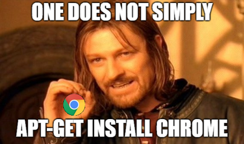

Install Chrome on Debian
February 7, 2018
How to install Google Chrome in Linux (Debian).
One does not simply “download” chrome as on pc or mac.
Nor does one simply apt-get install chrome. It’s always more complicated.

The “simple” way, per allaboutlinux
- Go to Google’s chrome download page
find the linux version “64 bit .deb (For Debian/Ubuntu)”. Download it.
file name should look something like “google-chrome-stable_current_amd64.deb” - open a terminal go to Downloads directory and try to install the package using “dpkg -i”command.
| cd ~/Downloads/ | |
| sudo dpkg -i google-chrome-stable_current_amd64.deb |
if you get an errors, you are probably missing dependencies are missing. Fix by apt-get -f install.
| sudo apt-get -f install |
Run the install again
| sudo dpkg -i google-chrome-stable_current_amd64.deb |
Run chrome “google-chrome” or click the icon in the menu.
| google-chrome |
A second method is to install via apt-get
| What it does | What to enter on the CLI |
| add the key | **wget -q -O – https://dl-ssl.google.com/linux/linux_signing_key.pub |
| set repository | **echo ‘deb [arch=amd64] http://dl.google.com/linux/chrome/deb/ stable main’ |
| Update packages | sudo apt-get update |
| install | sudo apt-get install google-chrome-stable |
| run | google-chrome |